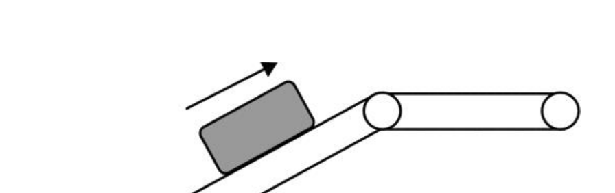
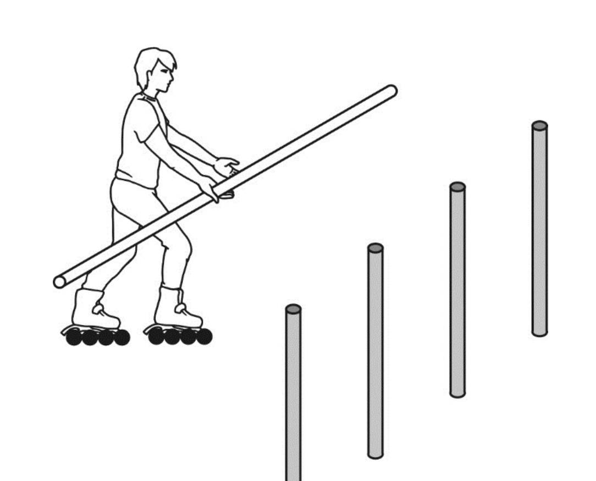
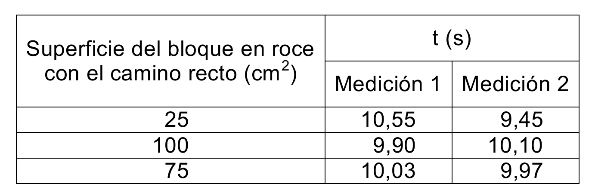
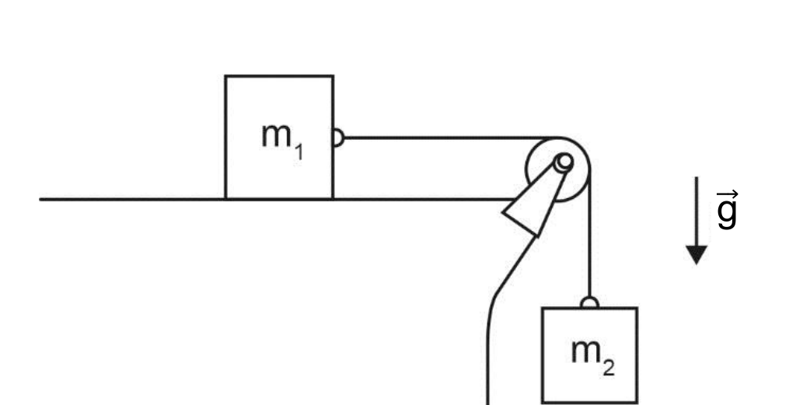
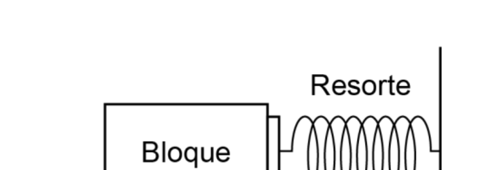
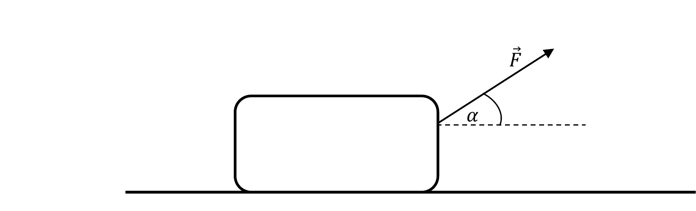
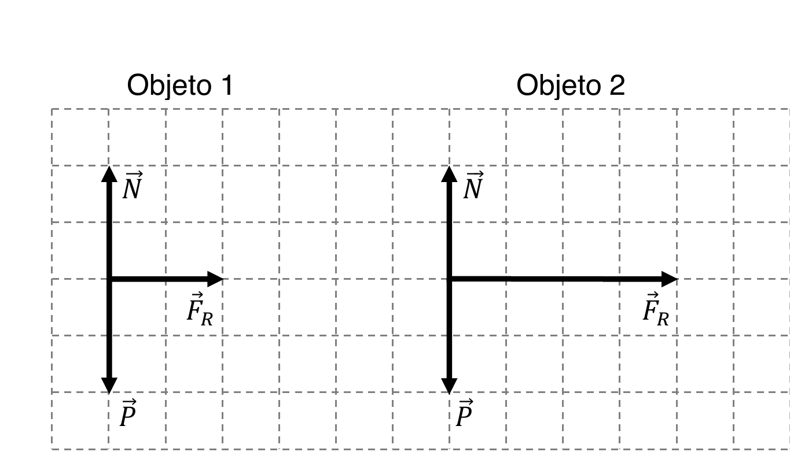
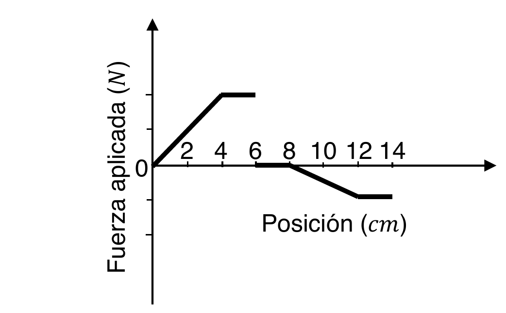
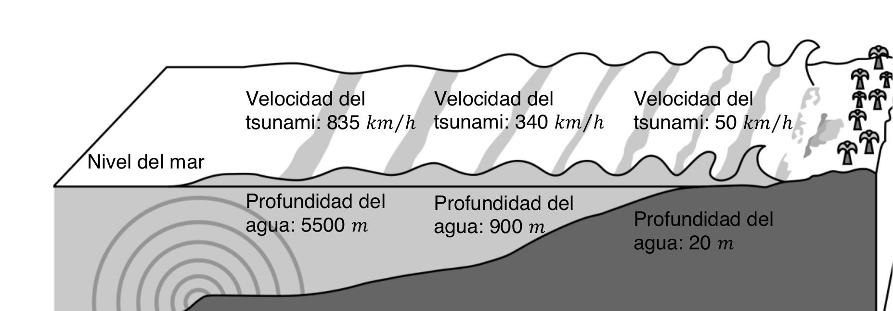

Movimiento rectilíneo, aceleración, fuerza neta y lectura de enunciados PAES.
Profesor Joaquín Saldaño
Punto de partida
Antes de calcular, se identifica el tipo de movimiento
MRU La velocidad permanece constante.
\(a=0\)
MRUA La velocidad cambia de manera uniforme.
\(a=\text{constante}\)
Reposo La posición no cambia respecto del sistema elegido.
\(v=0,\quad a=0\)
Método de lectura
Qué se observa en una pregunta PAES
1 ¿La rapidez es constante, aumenta o disminuye?
2 ¿El movimiento mantiene el mismo sentido?
3 ¿La fuerza neta es nula o distinta de cero?
4 ¿La aceleración apunta en el mismo sentido que la velocidad?
Si la velocidad es constante: \(a=0\).
Si la rapidez aumenta: \(a\) tiene componente en el sentido del movimiento.
Si la rapidez disminuye: \(a\) apunta en sentido contrario al movimiento.
Si la fuerza neta es constante: \(a\) es constante.
Modelo matemático
De la aceleración constante a las funciones
La aceleración mide cambio de velocidad por unidad de tiempo.
\(a=\frac{\Delta v}{\Delta t}\)
Si \(a\) es constante, la velocidad cambia linealmente.
\(v(t)=v_0+at\)
La posición acumula lo que hace la velocidad.
\(x(t)=x_0+v_0t+\frac12at^2\)
Por eso el gráfico \(x\)-\(t\) de un MRUA es parabólico.
Funciones del MRUA
Qué forma tiene cada gráfico
Si \(a\) es constante, \(v(t)\) es una recta.
\(v(t)=v_0+at\)
La pendiente del gráfico \(v\)-\(t\) corresponde a la aceleración.
Interpretación
El signo de la aceleración no se lee solo
Si \(v>0\) y \(a>0\), la rapidez aumenta.
Si \(v>0\) y \(a<0\), la rapidez disminuye.
Si \(v<0\) y \(a<0\), la rapidez aumenta.
Si \(v<0\) y \(a>0\), la rapidez disminuye.
La rapidez depende del módulo de la velocidad.
\(\text{rapidez}=|v|\)
Por eso una aceleración negativa no significa necesariamente “frenar”.
Gráfico velocidad-tiempo
Área bajo la curva y desplazamiento
En un gráfico \(v\)-\(t\), el área representa desplazamiento.
\(\Delta x=\text{área bajo }v(t)\)
Si el gráfico está sobre el eje, el desplazamiento es positivo.
Si está bajo el eje, el desplazamiento es negativo.
Ejercicio DEMRE 2024 · P10
Gota de lluvia con velocidad constante
Una gota de agua cae verticalmente en un día lluvioso sin viento. Se estima que se mueve con velocidad constante. Si \(\vec P\) representa el peso y \(\vec F_R\) el roce con el aire, ¿cómo debe ser la fuerza neta para que esa estimación sea correcta?
Fuente: DEMRE, PAES Regular Ciencias - Física, Proceso de Admisión 2024, Forma 163, pregunta 10.
Velocidad constante significa que no cambia ni módulo ni sentido.
Entonces la aceleración debe ser nula.
\(\vec a=\vec 0\)
Por la segunda ley de Newton:
\(\sum\vec F=m\vec a=\vec 0\)
Clave: la fuerza neta es nula.
Ejercicio DEMRE 2024 · P8
Cinta transportadora: velocidad constante

La caja se mueve con la misma rapidez que la cinta.
Para que no deslice respecto de la cinta, debe existir roce estático.
Ese roce permite que la caja acompañe el movimiento de la superficie.
No es roce cinético, porque no hay deslizamiento relativo entre caja y cinta.
Fuente: DEMRE, PAES Regular Ciencias - Física 2024, Forma 163, pregunta 8.
Ejercicio DEMRE 2024 · P11
Fuerza neta y aceleración
Sobre un bloque de \(10\,\mathrm{kg}\) actúan dos fuerzas horizontales: \(15\,\mathrm{N}\) hacia la derecha y \(5\,\mathrm{N}\) hacia la izquierda. ¿Cuál es la magnitud de la aceleración?
Fuente: DEMRE, PAES Regular Ciencias - Física, Proceso de Admisión 2024, Forma 163, pregunta 11.
Elegimos derecha como sentido positivo.
\(\sum F=15-5=10\,\mathrm{N}\)
Aplicamos \(\sum F=ma\).
\(10=10a\)
\(a=1\,\mathrm{m/s^2}\)
La aceleración apunta hacia la derecha; su magnitud es \(1\,\mathrm{m/s^2}\).
Ejercicio DEMRE 2024 · P63
Sistema y fuerza por contacto

El sistema que acelera es patinador más barra.
\(m_{\text{total}}=60+20=80\,\mathrm{kg}\)
La aceleración tiene magnitud \(3\,\mathrm{m/s^2}\).
\(F_{\text{neta}}=ma=80\cdot 3=240\,\mathrm{N}\)
La barra empuja cuatro pilares con fuerzas iguales.
\(F_{\text{pilar}}=\frac{240}{4}=60\,\mathrm{N}\)
Fuente: DEMRE, PAES Regular Ciencias - Física 2024, Forma 163, pregunta 63.
Ejercicio DEMRE 2024 · P64
Fuerza constante y aceleración
Sobre un objeto actúan una fuerza \(\vec F\) y otra fuerza constante. La pregunta compara afirmaciones sobre dirección de la aceleración, módulo de la aceleración y qué ocurre si \(\vec F\) cambia o se anula.
Fuente: DEMRE, PAES Regular Ciencias - Física, Proceso de Admisión 2024, Forma 163, pregunta 64.
La aceleración depende de la fuerza neta, no de una fuerza aislada.
\(\vec a=\frac{\sum \vec F}{m}\)
Si \(\vec F\) se anula, todavía puede quedar la otra fuerza constante.
Entonces la aceleración puede seguir siendo constante.
Clave: si \(F\) se anula, la aceleración es constante.
Ejercicio DEMRE 2025 · P67
Cuando la fuerza deja de actuar
Un bloque se mueve con aceleración constante por una fuerza \(F\). Luego \(F\) deja de actuar. El bloque continúa moviéndose sobre una superficie con roce hasta detenerse. ¿Cómo se describe la fuerza neta después de retirar \(F\)?
Fuente: DEMRE, PAES Regular Ciencias - Física, Proceso de Admisión 2025, Forma 163, pregunta 67. Pregunta marcada con asterisco en clavijero.
Después de retirar \(F\), queda el roce cinético.
El roce apunta contra el movimiento.
Si la superficie y el bloque no cambian, el roce se modela constante.
\(\sum \vec F=\vec F_R\)
La aceleración es constante y contraria a la velocidad: el bloque disminuye su rapidez.
Ejercicio DEMRE 2024 · P65
Tabla de tiempos: inferencia experimental

La pregunta compara el tiempo que tarda un bloque en detenerse.
Lo que cambia entre ensayos es el área de contacto.
Los tiempos medidos son prácticamente iguales.
Conclusión: en ese procedimiento, el tiempo hasta detenerse no depende apreciablemente del área de contacto.
Fuente: DEMRE, PAES Regular Ciencias - Física 2024, Forma 163, pregunta 65.
Puente conceptual
Caída libre: MRUA cuando se desprecia el aire
Cerca de la superficie terrestre, el peso es aproximadamente constante.
\(\vec P=m\vec g\)
Si la única fuerza relevante es el peso:
\(m\vec a=m\vec g\)
\(\vec a=\vec g\)
Por eso la caída libre se modela como MRUA.
No significa que todos los objetos reales caigan igual en cualquier situación.
Significa que estamos usando un modelo con resistencia del aire despreciable.
Ejercicio DEMRE 2027 · P8
Caída con paracaídas y resistencia del aire
La pregunta compara la caída de personas con paracaídas y pide inferir el efecto de la resistencia del aire sobre el movimiento.
Fuente: DEMRE, PAES de Invierno Ciencias - Física, Proceso de Admisión 2027, Forma 161, pregunta 8.
El peso apunta hacia abajo.
La resistencia del aire apunta contra el movimiento.
Al abrirse el paracaídas, aumenta mucho la resistencia del aire.
La aceleración deja de ser simplemente \(g\); el modelo de caída libre ya no basta.
Ejercicio DEMRE 2024 · P9
Galileo y control de variables
Galileo habría dejado caer objetos desde distintas alturas y también habría usado planos inclinados. La pregunta apunta a reconocer qué se logra al estudiar el fenómeno en contextos distintos.
Fuente: DEMRE, PAES Regular Ciencias - Física, Proceso de Admisión 2024, Forma 163, pregunta 9.
No se trata solo de obtener una fórmula.
Se busca separar lo esencial del fenómeno de las condiciones particulares.
El plano inclinado permite hacer más lento el cambio y medir mejor.
La idea física es reconocer una relación reproducible entre movimiento y tiempo.
Ejercicio DEMRE 2025 · P63
Plano inclinado: condición para iniciar movimiento
Una canasta permanece en reposo sobre un plano inclinado. Se pregunta qué ocurre si aumenta el ángulo de inclinación.
Fuente: DEMRE, PAES Regular Ciencias - Física, Proceso de Admisión 2025, Forma 163, pregunta 63.
Mientras está en reposo, la fuerza neta paralela al plano es nula.
Al aumentar el ángulo, aumenta la componente del peso paralela al plano.
El roce estático puede ajustarse solo hasta un máximo.
Si se supera ese máximo, la canasta comienza a deslizar.
Ejercicio DEMRE 2027 · P9
Reposo y roce estático
Un sistema permanece en reposo mientras se aumenta la masa que cuelga de una cuerda. ¿Qué ocurre con la fuerza de roce estático sobre el cuerpo apoyado?
Fuente: DEMRE, PAES de Invierno Ciencias - Física, Proceso de Admisión 2027, Forma 161, pregunta 9.
Si el sistema sigue en reposo, entonces \(a=0\).
\(\sum \vec F=\vec 0\)
Al aumentar la masa colgante, aumenta la tensión.
Para mantener el reposo, el roce estático debe aumentar y oponerse a esa tendencia de movimiento.
Ejercicio DEMRE 2027 · P67
Libro contra una pared: equilibrio vertical
Un libro es presionado horizontalmente contra una pared. Actúan peso, roce, fuerza aplicada y normal. Se pide la condición para que el libro no caiga.
Fuente: DEMRE, PAES de Invierno Ciencias - Física, Proceso de Admisión 2027, Forma 161, pregunta 67.
Para que no caiga, la aceleración vertical debe ser nula.
Verticalmente actúan el peso hacia abajo y el roce hacia arriba.
Las fuerzas horizontales explican el contacto con la pared, pero no equilibran directamente el peso.
Ejercicio DEMRE 2025 · P65
Sistema de bloques: rapidez creciente

La pregunta dice que ambos bloques aumentan su rapidez.
Eso exige aceleración en el sentido del movimiento.
Si \(m_2\) baja, sobre \(m_2\) actúan \(m_2g\) hacia abajo y \(T\) hacia arriba.
\(m_2g-T>0\)
\(T
Fuente: DEMRE, PAES Regular Ciencias - Física 2025, Forma 163, pregunta 65.
Ejercicio DEMRE 2027 · P10
Variable dependiente e instrumento
Se investiga la relación entre la masa de un objeto y la fuerza máxima horizontal que se le debe aplicar para que comience a moverse sobre una superficie con roce.
Fuente: DEMRE, PAES de Invierno Ciencias - Física, Proceso de Admisión 2027, Forma 161, pregunta 10.
La masa es la variable que se cambia.
La fuerza máxima requerida es la variable que se mide.
El instrumento para medir fuerza es un dinamómetro.
Clave: dinamómetro.
Ejercicio DEMRE 2027 · P7
Variables en un experimento

Se cambia el bloque por otros de distinta masa.
Por tanto, la masa es la variable modificada.
Se mide la aceleración que alcanza el bloque.
La aceleración es la variable medida.
La superficie debe mantenerse igual: variable controlada.
Fuente: DEMRE, PAES de Invierno Ciencias - Física 2027, Forma 161, pregunta 7.
Ejercicio DEMRE 2027 · P64
Ángulo de una fuerza y aceleración

La magnitud de \(\vec F\) se mantiene fija.
Lo que cambia es el ángulo \(\alpha\).
Se mide la aceleración de la maleta.
El objetivo abordable debe relacionar ángulo y fuerza neta/aceleración, no peso ni magnitud de \(F\).
Clave: efecto del ángulo con que se tira sobre la fuerza neta.
Fuente: DEMRE, PAES de Invierno Ciencias - Física 2027, Forma 161, pregunta 64.
Ejercicio DEMRE 2027 · P65
Vectores y fuerza neta

La normal y el peso permiten comparar masas.
La cuadrícula y los vectores están en la misma escala.
Si \(P_1\) y \(P_2\) tienen igual módulo, entonces las masas son iguales.
\(P=mg\)
Clave DEMRE: ambos objetos tienen la misma masa.
Fuente: DEMRE, PAES de Invierno Ciencias - Física 2027, Forma 161, pregunta 65.
Ejercicio DEMRE 2027 · P69
Gráfico fuerza-posición

El auto avanza siempre en el mismo sentido.
Fuerza positiva: acelera en el sentido del movimiento.
Fuerza negativa: acelera en sentido contrario al movimiento.
Entre \(12\,\mathrm{cm}\) y \(14\,\mathrm{cm}\), la fuerza está bajo el eje.
Por tanto, la fuerza es contraria al sentido de movimiento.
Fuente: DEMRE, PAES de Invierno Ciencias - Física 2027, Forma 161, pregunta 69. Pregunta marcada con asterisco en clavijero.
Ejercicio DEMRE 2027 · P72
Relación entre variables físicas

La figura entrega valores de profundidad y rapidez de propagación.
No hay que inventar una causa externa: se lee la relación representada.
Al aumentar la profundidad del mar, aumenta la rapidez de propagación.
Clave: a mayor profundidad, mayor rapidez de propagación.
Fuente: DEMRE, PAES de Invierno Ciencias - Física 2027, Forma 161, pregunta 72.